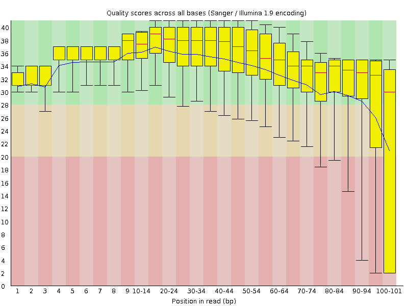
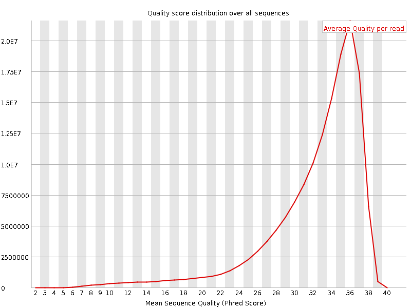
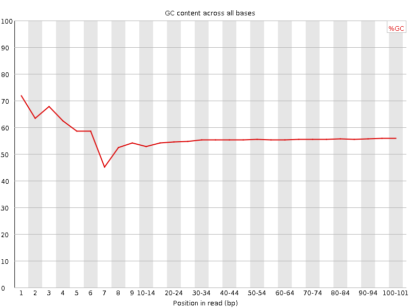
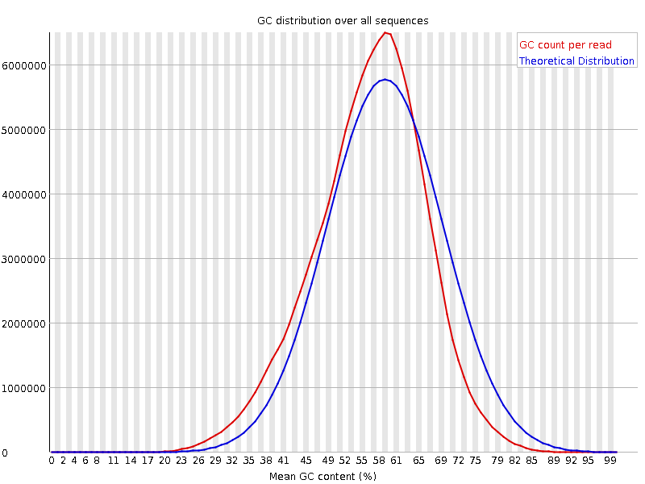
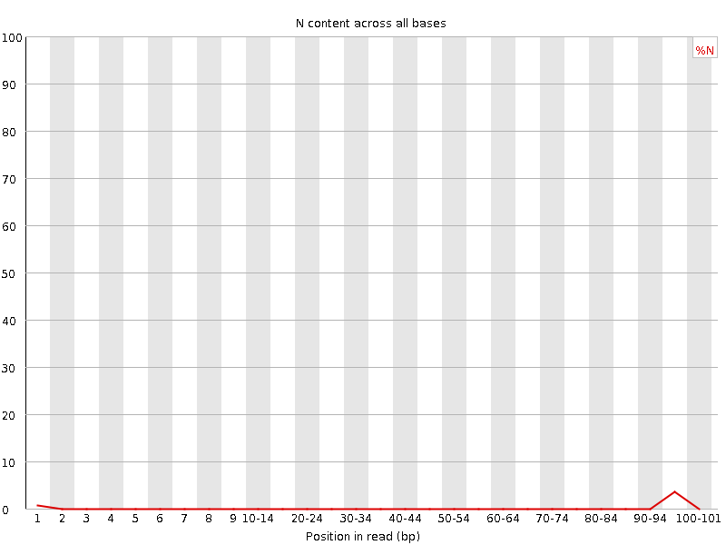
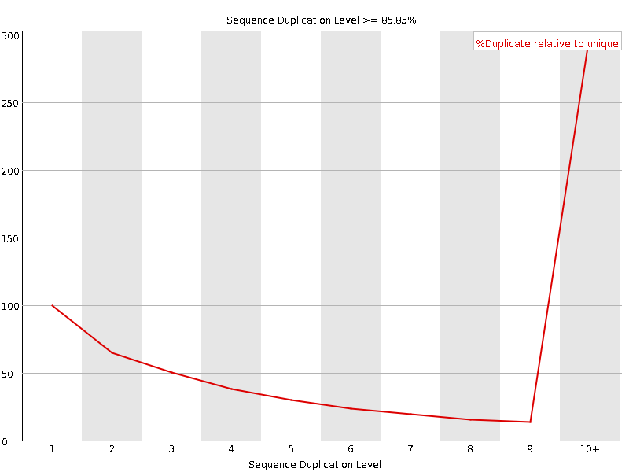
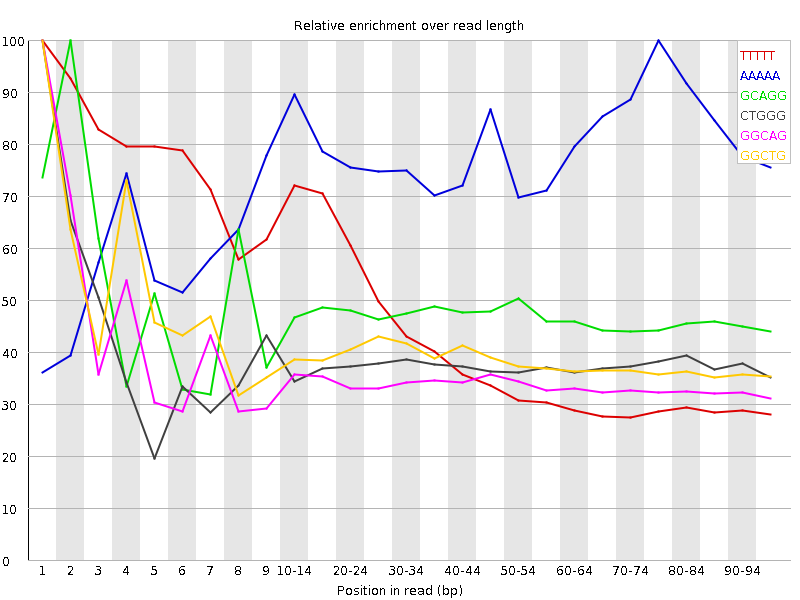

![[OK]](Icons/tick.png) Basic Statistics
Basic Statistics
| Measure | Value |
|---|---|
| Filename | SRR534303_1.fastq |
| File type | Conventional base calls |
| Encoding | Sanger / Illumina 1.9 |
| Total Sequences | 149659336 |
| Filtered Sequences | 0 |
| Sequence length | 101 |
| %GC | 55 |
![[FAIL]](Icons/error.png) Per base sequence quality
Per base sequence quality

Per sequence quality scores

Per base sequence content

Per base GC content

![[WARN]](Icons/warning.png) Per sequence GC content
Per sequence GC content

Per base N content

Sequence Length Distribution

Sequence Duplication Levels

Overrepresented sequences
No overrepresented sequences
Kmer Content

| Sequence | Count | Obs/Exp Overall | Obs/Exp Max | Max Obs/Exp Position |
|---|---|---|---|---|
| TTTTT | 37613485 | 4.736946 | 11.1081 | 1 |
| AAAAA | 26063465 | 3.5432775 | 4.518759 | 75-79 |
| GCAGG | 47733820 | 2.4149034 | 5.0978184 | 2 |
| CTGGG | 47577480 | 2.3704534 | 6.2376285 | 1 |
| GGCAG | 46103940 | 2.332446 | 6.699342 | 1 |
| GGCTG | 43991145 | 2.191771 | 5.5386972 | 1 |
| GCTGG | 43918140 | 2.188134 | 5.269927 | 1 |
| GGGAG | 37907470 | 1.8542883 | 5.5986943 | 1 |
| TGGGG | 38141035 | 1.8373898 | 6.3320427 | 2 |
| GGGGG | 42048075 | 1.5930096 | 5.414129 | 1 |
| GGGGA | 31510145 | 1.5413555 | 5.774756 | 1 |
| GTGGG | 29127490 | 1.4031752 | 7.402326 | 1 |
| GGGGT | 26705430 | 1.2864958 | 5.472075 | 1 |
| GCGGG | 19519830 | 0.76483804 | 5.0659695 | 1 |